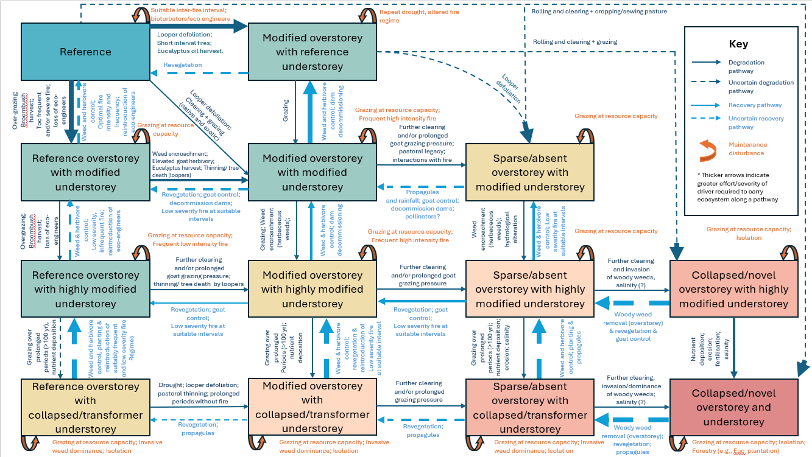

This conceptual State-and-Transition Model summarises the vegetation condition states and transition pathways used to support the mapped condition-state layer for the Living Landscape mallee study region.

The conceptual model should be interpreted alongside the mapped condition-state layer, field validation, local ecological knowledge, and the assumptions of the expert-elicited State-and-Transition Model framework.